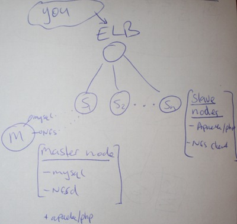
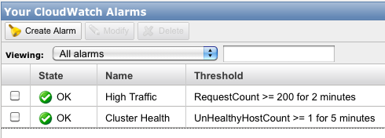

If you are reading this, you are an unwitting participant in my latest experiment: clustering my blog on Amazon EC2 – thanks! You will be connecting to my blog on one of several Amazon EC2 micro instances, cobbled together in a quick and dirty solution that was more knee-jerk reaction to some downtime, than well thought out project.
This post serves as a chance for me to test if the cluster works, and a summary of the architecture I have set up using several EC2 micro instances and WordPress. It’s a quick and dirty little WordPress cluster using spot-request micro instances at $0.007/hour – how fun!
A bit of background
I’m pretty sure I’m not the only computer nerd who wakes up in the morning and checks their emails first thing. This weekend just gone I had a rather rude awakening because my site was down and I had a slew of down alerts in my inbox. There is little more embarrassing for a computer nerd than a dead blog. Not to mention the implications of a search engine bot finding a broken site.
The EC2 micro instances are a bit flakey, but at 2c/hour they’re awesome and if you go for the spot instances you can actually get the for as little as 0.7c/hour!
The problem with a single micro instance was my site was going down when it came under sustained load on seldom visited pages. The CPU get’s capped after some (short) amount of time. This hardly ever happens when normal humans are visiting because they tend to visit pages that other people visit, thus they get served a fast cached version. But when a (arguably badly behaved) crawler starts hitting really old posts from the archive, one after the other, several times/second – things get bogged down, and once the CPU cap comes down, there’s no recovery as the requests just pile up.
This is not the first time it’s happened and I really wanted to fix it in a future proof, albeit quick and dirty manner.
In hindsight the cheapest option would have been to just bump the size of my instance type up to the next level and pay a lot more money each month, given how long I spent mucking around with this. But I wanted to try and keep using the micro instances because I really like the concept – and I had wanted to try the spot instance requests for a while too. So this was a chance to do all of that.
The Solution
The requirements were quite simple really:
- Keep the filesystem in sync, for example when I upload a screenshot, or change a stylesheet
- Keep the DB in sync, when a user posts a comment on node 1, people on node 2,3,…,N need to see it
- Allow nodes to be added/removed without affecting the site
- Fallback to status quo, or bigger instance if it fails entirely
- Tolerate the spot-instances terminating if the price gets high
- Update: Basic PHP session support – some plugins start PHP sessions, even though core WordPress doesn’t use them.
Non-requirements:
- Very high fault tolerance; down time is OK, data loss of a few hours would be OK – no need for master/slaving mysql.
- Complete automation (at least not initially); I need to get a feel for how stable it is and where it breaks first.
- Redundant points of failure; I’m hosting it 100% on Amazon, if they let me down, they let me down.
Sessions – WP doesn’t use them, as such so no need to replicate them (unlike Magento).
So here’s what I did:
Overview
Before I started I drew a crude picture of how the cluster will look:

It helped me to know what various technology would be required, and it might help you to understand the basic layout of the cluster.
Load Balancing
This is all possible thanks to the Amazon ELB. It balances traffic evenly across the nodes in the cluster, and if it detects unhealthy ones, it will move them out of the cluster until they return to health. This is the vital part of it, because it means if one of the micro instances suffers the CPU cap of doom, it will get taken out of the cluster, where it can recover with no traffic for a minute and then automatically be put back in.
Data Sharing
This turned out to be very easy, I changed mysql to bind on the internal interface of the master node(instead of localhost), but locked down access to it to only EC2 instances in the cluster. All the nodes in the slave simply point the WordPress install to the elastic IP of the master node, and when an EC2 server resolves an elastic IP, they get the internal network interface, not the external one.
Update: Heiko quite rightly noted this section is a bit vague, here’s some more info:
Each elastic IP in AWS has it’s public IP and also a private internal network IP.
For example: ec2-50-17-231-95.compute-1.amazonaws.com
If I resolve the IP from my mac laptop at the office:
(Note: we’ll use ping, dig output is too messy for my blog post!)
~ ashley$ ping ec2-50-17-231-95.compute-1.amazonaws.com PING ec2-50-17-231-95.compute-1.amazonaws.com (50.17.231.95): 56 data bytes |
But if I resolve it from an AWS server:
~$ ping ec2-50-17-231-95.compute-1.amazonaws.com PING ec2-50-17-230-94.compute-1.amazonaws.com (10.202.51.192) 56(84) bytes of data. |
So knowing that, and knowing that the elastic DNS never changes, even if we stop and start and fiddle with the master node – then in our wordpress DB config, when it asks for the Host name of the DB server, instead of using the local IP 10.202.51.192, we use the Elastic DNS ec2-50-17-231-95.compute-1.amazonaws.com.
Your WordPress config then might look like this:
//<snip> define('DB_NAME', 'dbname'); // The name of the database define('DB_USER', 'dbuser'); // Your MySQL username define('DB_PASSWORD', 'dbpasswd'); // ...and password define('DB_HOST', 'ec2-50-17-231-95.compute-1.amazonaws.com'); // 99% chance you won't need to change this value //</snip> |
Now note this is the config on the master node’s web root, because it’s exported to all the child nodes – so all copies of the wordpress site use the same config. Change it on the master and they all update.
The same config setup works for EC2 sites running Magento, or any other app too. Hope that makes this section a bit clearer.
File Sharing
It is important that each slave node in the cluster is looking at the same files, for example if I added a new screenshot through the admin while on one of the nodes, the others would all need to see it (at least until CloudFront adds it to the CDN network I use).
My solution here is NFS, I know that’s not the highest performance option, but it really made things simple, and seeing as the goal was quick and dirty, I went with it. Security is provided thanks to the EC2 security groups, so only nodes in the ELB can connect to the NFS server.
I suggest using the soft mount option on the clients, so that if the master hiccups, once it’s responding again the clients pick up the connection easily. I had trouble with hard mounting the NFS, the clients become unresponsive, even when the server was running properly again.
Data Safety
I use Eric Hammonds awesome EC2 consistent snapshot as a cron job, this takes a snapshot of the master node every N hours (where N is the amount of data I’m willing to lose). This way the most recent snapshot can simply be used to start up a replacement master node. Yes initially that would cause downtime, but it _could_ be scripted if it happens regularly, it shouldn’t.
Spot instances
The spot instances can disappear if the bid price gets too high, so I needed the cluster to be able to handle that. Firstly, the load balancer will stop routing traffic to the nodes if they go down, but it meant I couldn’t rely only on spot instances – if they all went away there would be none in the cluster.
My solution was to stump up the 2c/hour for one on-demand slave node, think of it as the ‘last stand’. If the spot price goes too high and all the spot instances terminate, this one lone ranger has to hold out until I either bid more, or the price comes back down and the spot instances restart.
PHP Sessions
Update: Oops, seems like core WordPress does not need session support, but some plugins, e.g. wp-ecommerce, do. So it’s best if you use any such plugins, or don’t want to risk it that you also allow sessions to be shared among the nodes. Thankfully this is easy.
PHP by default stores it’s sessions on disk, in /tmp. We simply tell it, on a per-site basis, or globally, to store it’s sessions inside our NFS mounted area like so.
On a per-site basis use the .htaccess file:
php_value session.save_path "/path/to/your/nfs-share/tmp" |
Or for all sites on the server use the php.ini:
session.save_path = "/path/to/your/nfs-share/tmp" |
Fallback
The master node is a slightly specialized version of the slave nodes, so it does have Apache on it. If it all turns to custard – I’ll simply stop the master, change it to a large instance and fire it back up behind the ELB – I’ll be back to where I started just with a bigger instance type.
Results/Conclusion
I’m monitoring the micro-cluster closely over the next few days, and will update here with what I find. I created a couple of cloudwatch alarms so I can check on things. If these fire too often I’ll need to add autoscaling to terminate and restart the spot instances if the become unhealthy. For now I’m hoping it will occur infrequently or not at all.

I know the NFS connection is flakey, but it’s a very simple way of keeping things like css/plugins/cached files in sync across the nodes. If anyone has a better suggestion, I’d like to hear it.
For performance testing, I used a slightly modified version of my magento performance testing site to test the new WordPress cluster set-up. It occurred to me that the performance testing I do on magespeedtest.com could be good for other CMS’s – any feedback on the idea of a wordpress/joomla/$cms speed test tool?
Anyway, the results were pleasing:
129.98 trans/sec @ 0.28 secs each
If I get that much real traffic, I’ll be signing up for adwords before fixing my blog!
In conclusion, I hope this little guide to WordPress clustering on EC2 is interesting, I can’t with a straight face recommend you go and implement this yourself just yet, but once I have more experience with it, I’ll let you know. I would love any ideas or feedback on improving this setup.
One thing that has become clear, EC2 is a powerful infrastructure building block, which really underpins this entire project – it has really blazed a trail and I look forward to more innovation from the AWS team.
First experience update – after 1 day: Well, I lost one node on the first day. A random patch of NFS flakiness took it right out mid-way through reading, Apache stopped responding, reboots would not complete, it was well dead. Solution: terminate it, remove it from the cluster and the spot request will fire up a new one, which get’s added to the cluster.
If this happens frequently I will write a short script to automatically terminate long-unhealthy instances, and add their replacements to the cluster.
Second experience update – after 1 month: Geez has it been a whole month?! The cluster has been rock solid the whole time, no downtime – not even a single node failure since that first one the day after I launched it. I checked the CPU usage across the cluster and it hardly ever spikes for more than a few seconds. There is a lot of network traffic between the nodes, due to the NFS – but with EC2 the between instances data transfer is free and fast. So far, so good.
Months later update : I wrote a follow up to this, autoscaling the cluster. It makes the cluster a lot more reliable, and entirely hands off. You should read it.
Cold try pingdom.com for site monitoring. free 20 SMS credits and nice dashboard status page. We moved to similar architect at tomizone. We use s3fs for the sharing file report from db server to the app server, its slow and occasionally drop connection, will give NFS a try when I have time. ELB really good for website traffic use case, The problem I got is we cant retrieve its IP at the time I try, we cant get it go pass the wall garden.
When I can test my blog with you modified magento performance testing?^^
I’m thinking of putting a link to your blog, particularly this post, on the Wikipedia article about nerds…
As for NFS, why not use Rackspace Cloudfiles? Simple APIs (probably an existing WorldPress, possibly under their previous name Mosso), dirt cheap and you get infinite data redundancy, plus of course the benefits of CDN.
Hi Ashley, how are you?
Regarding file sharing between nodes: IMHO is NFS + any HTTP accelerator solution (like Varnish oder Amazon’s CloudFront) a very simple and easy to handle setup. NFS nerver get’s loaded, even when flushing all objects in cache.
@Sven – thanks for stopping by! I’ll give Varnish a go and report back on my findings.
@J.T. I’m sure there are more nerdy people you could reference 🙂 I already use Cloudfront CDN for most files (check the images they should come off cdn.aschroder.com). But the issue is making sure all nodes can see the files (e.g new plugin file or template update). I think NFS would be faster, but I’ll try it out. The Amazon equivalent is the s3fs that Ken mentioned I think.
@Ken – Good feedback, thanks! You must be hanging out for an elastic IP + ELB combo then!
Very helpful post as I’ve been running around in circles it feels like trying to figure out why under a bit of load the micro instance I’m testing spikes CPU and becomes unresponsive. I’ve look for optimizations, especially for MySQL, with on too much change. Your statement about,
“The problem with a single micro instance was my site was going down when it came under sustained load on seldom visited pages. The CPU get’s capped after some (short) amount of time. ”
And the link to Greg’s post make it more clear as to what is happening to the micro instance.
The MySQL access seems to responsible for the CPU spike and envoke the mico instance load-leveling to a severely limited amount CPU. Even using caching like W3TC might not help completely since it still needs to build the cached pages from the database each hour. And when less often accessed pages are cached (like when google bot indexed).
Hi. I wanted to ask if you had ever thought of having a master/slave configuration. I am trying to build something similar to what you did. Do you see any advantages between the 2 configurations?
Hi,
The relative work that MySQL is doing on WordPress compared to what Apache is doing means that the DB server is not really working very hard on my setup.
I wouldn’t gain much benefit from offloading reads to one or more slaves, but your setup may vary. It would be worth doing some load testing and see if the CPU % usage on MySQL gets high during heavy loads. If so consider testing with a slave setup.
You could also move the DB onto it’s own host too, and consider a small or medium instance instead of a micro for it. I always prefer less moving parts.
The main reason I think you’d go with the master/slave DB server is for fault tolerance. You could have the slave server on warm standby, and auto-scale it in behind the MySQL endpoint if the master server stops responding. Your data loss would (should) be very low.
I’d be interested to hear what you decide on and how it works out for you.
I am currently going with a solution similar to the one you adopted. I had actually tried to put HyperDB for WordPress on, but I got worst performance than before. Lately I am running a db server who just handles all the db requests. As you were saying the CPU usage is quite slow, but I have to check if there’s any network bottleneck this way.
Thanks so much for your post!
I am curious – how many slave nodes do you have? Is it still pretty cheap with your setup? I have one micro instance that is having the same issue of cpu going to 100% with crawlers. I wanted to keep my cost low but still handle those cpu spikes and pay more when they happen by adding an extra slave.
Forgot to ask. Then does your master node never cap out with cpu issues. Does this mean you have a micro instance for the master node and micro instances for the slaves?
@Ryan. Yes micro for the master and normally 4 micros for the frontend slave cluster. Of the 4 frontends, 1 is an on demand, the other 3 are on spot pricing of ~2.5c/hour. I did that so that when the price of spot micros goes crazy, my cluster drops back to 1 on demand – if all are spot, then it drops to 0! The problem is (and it has happened several times) that the lone micro can face the CPU cap of doom, and the site goes down. I need to pair this approach with autoscaling, so that when micro spot price is high, the on demand instances kick in for the few hours they are needed, then get terminated once the spot micros can come back. But alas, that is a blog post for another day!
Also, the master node CPU usage is quite low, because it’s basically just DB and file server, and once the pages are all cached, the db is seldom hit, so mainly it’s a NFS server for the front ends. High bandwidth, low cpu – but intra-ec2-instance bandwidth is free (thankfully).
It’s cheaper than a medium or large instance, and my load testing indicated strong request throughput, but the extra moving parts of a cluster and upkeep, probably makes it only borderline worth while for production, as a hobby – it’s justifiable. if I take the next step and script the on-demand handling etc, then maybe it’d be robust enough.
In any case, if you try it, let me know how you get on.
Just wanted to say thanks for the great post and for sharing your experiences! I’m looking at putting together a similar high availability solution for WordPress and Drupal sites using Amazon’s services. Will come back with questions and experiences if I go that route. Thanks again! Dave
I’m just about to install such a cluster (more probably on linode than on EC2), and I’m using Chef cookbook for the deployment. Are you using Chef too? are your cookbooks public? I’m trying to reinvent as few wheels as possible… 🙂
BTW, I warmly recommend a comment email registration plug-in (like Automattic’s own JetPack for WordPress), it helps the conversation continue.
Haven’t used chef, sounds interesting though.
We had a similar experience with a micro-instance but it turns out that installing apache on EC2 via yum with mod_proxy sets the server as an open proxy by default. Perhaps you should try restricting mod_proxy to work only for your domain.
Hi Ashley,
could you give me a hint on how to setup the data sharing? If I get you right I need to set the bind-address in my.cnf to the private ip-address. But the private ip-address changes every time if I restart an instance.
Regards
Heiko
@Heiko – I say in the article “when an EC2 server resolves an elastic IP, they get the internal network interface” which I guess is a bit vague on second look.
Basically you want the front end nodes to refer to the DB host by the domain name of the elastic IP of the master node. That way when they resolve that domain name, they’ll get the internal network IP.
I’ll update that section of the article to make it clearer.
Hi Ashley,
thanks for clearing this point. Your blog helps a lot to understand the different parts of aws and how they play together. Many thanks for that.
I’m wondering why you don’t use RDS for your datasources.
Heiko
Glad to hear it.
RDS is great, I just didn’t need a dedicated DB server for a small WordPress cluster.
The database is hardly doing any work. For difefrent applications, such as Magento it’d be ideal to use RDS, and the memcache server, so that the front end nodes can focus only on running the web app.
Hi Ashley,
with the help of your post I managed to put my TYPO3 Website on ec2 instances. Thanks a lot.
One thing I came up with is that I had to open TCP-Ports in my security group for NFS. I’m wondering if I configured something wrong or did you also open TCP-Ports for NFS?
Regards
Heiko
You have the ports open, but only for EC2 instances within the specific security group of your front end nodes. The EC2 firewall makes this part easy.
Dear Ashley, excellent solution; I was looking exactly the same. However need step by step guidance for setting up master, slave instances and creating database and NFS server and client. Please give some leads. Thanks
This is what I do for my site. The only difference is that I have a memcached server to handle PHP sessions.
Ashley, I have to applaud you on being one of the very few to actually think things through and have a viable aws scaling wordpress tutorial. I’ve tried them all, with a real 1000 page blog, and almost all of them can’t run on a t1.micro – but your auto scaling solution does the trick.
Thanks Larry! Yes, the autoscaling follow up to this post is I think important, since adding that, and going on-demand, not spot, I have had a much more reliable site.
Hi Ashley,
thanks a lot for your blog post. I am just starting to learn about EC2 and still have some questions:
How is your storage organized? Do you use an EBS volume for your master instance and the slave instances use the data via NFS?
Do you have different AMIs for the master and the slaves?
Cheers
Lars
Just a tip for anyone that doesn’t know much about MySQL. I followed the steps in this blog post but still couldn’t connect to MySQL from neither my master node nor my web front-end node. I kept getting a “Error establishing a database connection” error whenever I attempted to view my site in a browser. After MUCH banging my head on the proverbial wall, I figured out that the TurnKey WordPress AMI I started with when I created my EC2 instances was set to bind MySQL to the loopback address AND the privileges for user root in the User table were restricting host to localhost only.
To resolve the error, I modified /etc/mysql/my.cnf and changed
bind-address = 127.0.0.1
to
bind-address = ec2-[elastic ip here with dashes].compute-1.amazonaws.com
So that fixed the binding issue. To fix the permissions issue, I logged into MySQL as root on the console and added a new record to the User table in the mysql database as follows:
mysql -u root -p
[password]
GRANT ALL PRIVILEGES ON *.* TO ‘root’@’ip-%.ec2.internal’ IDENTIFIED BY ‘[password]’;
This allows the root user to access MySQL from any host that starts with “ip-” and ends with “.ec2.internal”. (FYI – I tested using telnet to see that the internal DNS name is what goes across the wire.
After those changes, I was able to connect to MySQL from both the master node and my web front-end nodes.
So if you’re using a 3rd-party AMI as your starting image and can’t connect to MySQL to save your life, check your /etc/mysql/my.cnf file and the mysql.User table!!
Joe, you have restored my faith in enabling comments, thanks for your contribution.
https://twitter.com/aschroder/status/319918359200276481